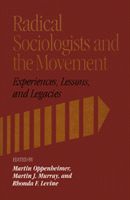

<body bgcolor="#FFFFFF" text="#000000" link="#0000FF" vlink="#CC0000" alink="#CC0000"><center><hr width="350" size="1" align="center" noshade>Autobiographical essays by individuals whose radicalism developed in and around the discipline of sociology<hr width="350" size="1" align="center" noshade><p><a href="https://cdcshoppingcart.uchicago.edu/Cart/ChicagoBook.aspx?ISBN=9780877227458&&PRESS=temple" target="_top">Buy this book!</a> | <a href="https://cdcshoppingcart.uchicago.edu/Cart/Cart.aspx?PRESS=temple" target="_top">View Cart</a> | <a href="https://cdcshoppingcart.uchicago.edu/Cart/Cart.aspx?PRESS=temple" target="_top">Check Out</a></p><p></p></center><!--none//--><h1>Radical Sociologists and the Movement</h1>
<H2>Experiences, Lessons, and Legacies</H2>
<h3>edited by Martin Oppenheimer, Martin J. Murray and Rhonda F. Levine</h3>
<P>cloth 0-87722-745-4 $55.50, Dec 90, <FONT COLOR=#990033>Out of Stock Unavailable</FONT>
<br>Electronic Book 1-43990-170-8 $55.50 <FONT COLOR=#990033>Out of Stock Unavailable</FONT>
<BR> 256 pp
</P><p>As part of the current rediscovery of the Sixties, this book brings together autobiographical essays by individuals whose radicalism developed in and around the academic discipline of sociology. The contributors expose the roots of their radical consciousness by examining interrelated personal and historical themes: how the socioeconomic and political conditions of the 1960s acted as an intellectual incubator that served to radicalize a significant number of sociologists; and how critical, radical, Marxist, and humanist sociology developed in the context of this era. Aiming to "redefine sociology to correspond to social reality," these academics broke from the institutional establishment and turned to radical interpretations of the persistence of racial and gender inequality, power relations, the permanence of privilege and poverty, the causes and consequences of war, among other topics.
<BR>&nbsp;<h2>Contents</h2><P>
<p>Acknowledgments
<br>Introduction: The Movement and the Academy &#150 Martin J. Murray, and Rhonda F. Levine
<p><b>Part I: The History of Radical Sociology</b>
<br>1. The Sociology Liberation Movement: Some Legacies and Lessons &#150 Dick Flacks
<br>2. Steps Taken Toward Liberating Sociologists &#150 Alfred McClung Lee
<br>3. The Early Years of the Sociology Liberation Movement &#150 Carol A. Brown
<br>4. Talking Sociology: A Sixties Fragment &#150 Evan Stark
<br>5. The Contradictions of Radical Sociology: Ideological Purity and Dissensus at Washington University &#150 Henry Etzkowitz
<br>6. Building Fires on the Prairie &#150 Martin J. Murray
<p><b>Part II: Becoming a Sociologist</b>
<br>7. Pages from a Journal of the Middle Left &#150 Martin Oppenheimer
<br>8. Critical Sociologists: Born or Made? &#150 Norma Stolz Chinchilla
<br>9. Coming Home: A Sociological Journey &#150 Lynda Ann Ewen
<br>10. The Making of a Class-Conscious "Race Man": Reflections on the Sixties &#150 Robert G. Newby
<br>11. Living and Learning Sociology: The Unorthodox Way &#150 Hardy T. Frye
<br> 12. At the Center and the Edge: Notes on a Life in and out of Sociology and the New Left &#150 Robert J. S. Ross
<p><b>Part III: Sociology in Action</b>
<br>13. "lf We Know, Then We Must Fight", The Origins of Radical Criminology in the U.S. &#150 Tony Platt
<br>14. Notes from an Anarchist Sociologist: May 1989 &#150 Howard J. Ehrlich
<p><b>Part IV: Documents</b>
<br>15. Fat-Cat Sociology &#150 Martin Nicolaus
<br>16. Women’s Caucus Statement and Resolutions to the General Business Meeting of the American Sociological Association, 3 September 1969
<p>The Contributors
<br>Index
</P><BR>&nbsp;<H2>About the Author(s)</H2>
<P><b>Martin Oppenheimer</b> is Associate Professor of Sociology at Rutgers University.</P>
<P><b>Martin J. Murray</b> is Associate Professor of Sociology at State University of New York, Binghamton.</P>
<P><b>Rhonda F. Levine</b> is Associate Professor of Sociology at Colgate University.</P>
<BR><H2>Subject Categories</H2>
<p><A HREF="/tempress/sociology.html" TARGET="_top">Sociology</a>
</p>
<p align="center"><a href="https://cdcshoppingcart.uchicago.edu/Cart/ChicagoBook.aspx?ISBN=9780877227458&&PRESS=temple" target="_top">Buy this book!</a> | <a href="https://cdcshoppingcart.uchicago.edu/Cart/Cart.aspx?PRESS=temple" target="_top">View Cart</a> | <a href="https://cdcshoppingcart.uchicago.edu/Cart/Cart.aspx?PRESS=temple" target="_top">Check Out</a></p><p><font face="Arial" size="1"><a href="copyright.html" onMouseOver="window.status='Web Copyright Policy';return true;" onMouseOut="window.status=''" title="Web Copyright Policy">&copy;</a> 2015 <a href="http://www.temple.edu" target="new" onMouseOver="window.status='Link to Temple University home page';return true;" onMouseOut="window.status=''" title="Link to Temple University home page">Temple University</a>. All Rights Reserved. http://www.temple.edu/tempress/titles/699_reg.html</font></p>